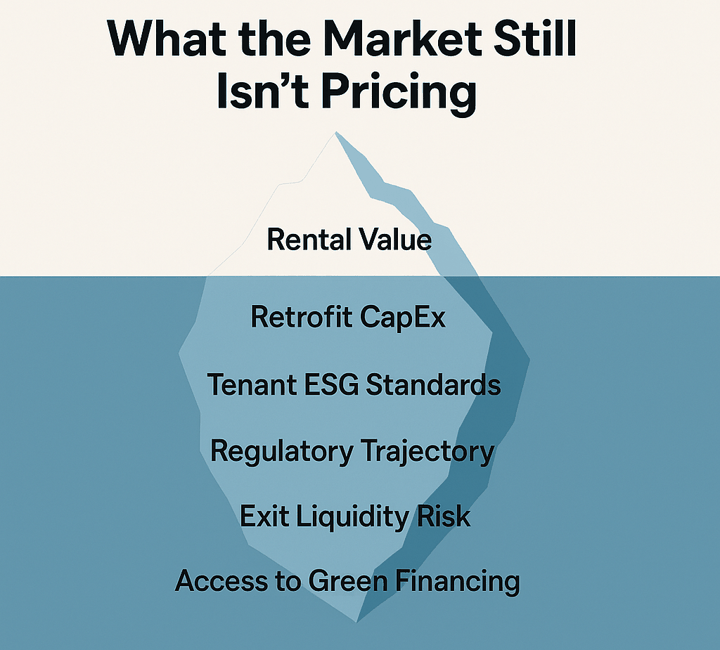

Operational Strategy: The Retrofit Moment — Repricing, Regulation, and the Real Cost of Delay
Why energy upgrades are now core to valuation, lending, and demand across European CRE.
Across Europe, commercial real estate is undergoing a rapid repricing. Retrofitting has moved from being a sustainability checkbox to becoming a key capital strategy. This is no longer just a compliance exercise. It is about protecting valuation, securing access to financing, and meeting the shifting demands of tenants.
As 2025 progresses, the question is no longer whether to act. It is about how quickly owners and investors can respond in a market where timelines are tightening, costs are becoming clearer, and the rewards of proactive planning are growing.
The Case for Immediate Action
In the UK, the retrofit imperative is rapidly advancing through government policy. Under the proposed phased Minimum Energy Efficiency Standards (MEES) framework, the government has signalled a sequence of regulatory milestones for non-domestic landlords: requiring valid EPCs by April 2025, achieving at least EPC C ratings by April 2027, providing updated EPCs by April 2028, and meeting EPC B standards by April 2030 [1].
Existing regulations already prohibit the leasing of commercial buildings below EPC E. Non-compliance can trigger financial penalties ranging from £10k-£150k [2]. These dates and penalties underscore that retrofit obligations are not a future concern. They are already creating present-day financial and operational pressure, particularly in urban cores with significant concentrations of legacy assets. Despite these trends, only 9.8% of non-domestic UK properties currently meet EPC A or B standards [5]. Due to limited data coverage, the true share of compliant stock may actually be even lower.
Across the EU, parallel efforts are underway. Instruments such as the Carbon Risk Real Estate Monitor (CRREM) decarbonisation pathways and the updated Energy Performance of Buildings Directive (EPBD) are accelerating regulatory convergence [3][4].
Cost Pressures and Investment Variability
While the cost of retrofitting is frequently cited as a barrier, recent research shows substantial variability in both expenditure and timelines. More nuanced estimates indicate that in the UK upgrades from EPC D to C generally cost between £30-£60/sq.ft.; whereas moving from EPC C to B or A typically ranges from £50-£75/sq. ft. [6]. Full-scale deep retrofits in constrained city centres can easily exceed £100 per square foot.
The scale of this potential investment is significant. In Central London alone, the estimated capital requirement to upgrade 11.9 million square feet of inefficient office space is approximately £370 million, or nearly 9% of the total capital value of the affected stock [7]. For investors and owners, this is not simply a cost burden. It is a benchmark against which to measure opportunity.
A Europe-Wide Bifurcation
Performance divergence between prime and secondary assets is growing across Europe. Since
2020, prime office rents have increased by 11.8%, and secondary rents have grown only 4.8% [8]. This bifurcation is especially pronounced in cities with strict energy efficiency mandates.

In London’s West End, the rent gap between prime and secondary offices has widened by 32%, while Amsterdam has seen a 25% divergence, and the City of London has experienced an 18% spread [8]. Regulatory stringency, combined with tenant preferences for energy-efficient environments, is reshaping commercial lease dynamics.
Lending, Data Gaps, and Market Inefficiencies
The lending environment is also evolving, but many financial institutions remain behind the curve. According to the European Central Bank’s 2022 climate stress test, 13% of reported commercial property collateral could not be assigned an EPC rating [9]. More than 65% of banks relied on proxy data for emissions and energy performance, often failing to collect essential metrics such as carbon output, EPC ratings, or physical climate risk exposure [9].
These data gaps introduce valuation inefficiencies. Many underwriters continue to underestimate the capital expenditure required to future-proof assets. For property owners who can provide transparent energy data and structured retrofit plans, this creates a market advantage. These assets are better positioned to secure financing on competitive terms. They also have the potential to outperform mispriced comparables that have yet to be revalued.
This supports the emerging thesis of decarbonisation value-add arbitrage - the pricing gap created when retrofit-ready assets are undervalued by markets still adjusting to regulatory and tenant realities. For investors, the opportunity lies in acting before that gap closes.
The Window Is Narrowing
Europe’s commercial real estate markets are reaching a tipping point. The regulatory timelines have been published. The capital expenditure benchmarks are increasingly transparent. Tenant expectations are firmly established. What remains variable is investor response.
The opportunity lies not only in protecting downside risk, but also in capturing an upside that is not yet fully priced. Retrofit is not a one-off project. It is a systemic shift in how value is preserved, generated, and measured.
The assets that succeed in this next cycle will be those that are transition-ready. The decisions made in the next 24 months will determine which portfolios are positioned for long-term performance and which are priced out.
- Department for Business, Energy & Industrial Strategy. "Non-domestic private rented sector minimum energy efficiency standards: Future trajectory to 2030". Mar 2021 ↩
- Department for Energy Security and Net Zero. "Non-domestic private rented property: Minimum energy efficiency standard – landlord guidance". 2025 ↩
- European Commission. "Revision of the Energy Performance of Buildings Directive (EPBD)". 2025 ↩
- European Commission. "Carbon Risk Real Estate Monitor (CRREM) Project". 2018 ↩
- Allied Irish Banks. "Commercial buildings in the UK: Top 15 percent energy efficiency threshold". 2023 ↩
- Gardiner & Theobald. "Decarbonising the built environment – EPC, MEES and the cost implications". Nov 2023 ↩
- CBRE Research. "How much investment might be needed to upgrade Central London’s energy inefficient office stock?". Jan 2024 ↩
- Savills. "Why prime and secondary office rents have started to diverge". Dec 2023 ↩
- European Central Bank. "Climate risk stress test: Methodology and results". Jul 2022 ↩